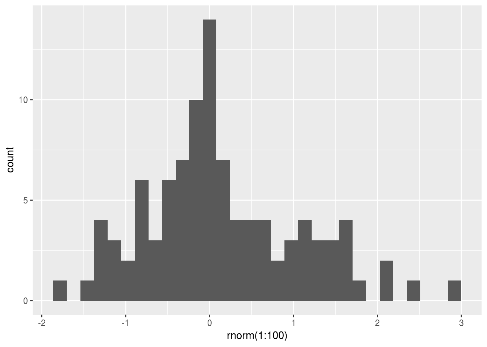

Chapter 1 Introduction
1.1 Pourquoi R ?
1.1.1 La popularité de R et sa facilité
Un nombre croissant de personnes utilisent R. Les graphiques montrent le nombre croissant de questions en relation au langage R sur le site stack overflow. Ces graphiques sont obtenus en utilisant un script R (voir code en bas de la page), qui va automatiquement chercher la donnée sur internet, la traiter et visualiser les résultats du nombre de questions à propos de R sur le site.
1.1.2 D’autres raisons
- Open source & Gratuit
- Une très grosse communauté de développeurs et d’utilisateurs
- Facile à utiliser pour des non-programmeurs pour des calculs statistiques
- Possibilité de créer de belles illustrations, applications web et même le cours que vous lisez actuellement (à l’aide du package Bookdown)
- Facile à installer sur les systèmes d’exploitations Linux, Windows et Apple
- Une quantité très importante de package
1.2 Environnement R
1.2.1 Pré requis Installation de R
Sur Windows
- aller à l’url http://cran.r-project.org/bin/windows/base/ et télécharger la dernière version de R en fonction de votre ordinateur 32 bit ou 64 bit (pour le savoir aller sur paramètres>système>information système)
Sur Apple
- http://cran.r-project.org/bin/macosx/ et télécharger la dernière version de R
Pour installer Rstudio
- http://www.rstudio.com/ide/ pour télécharger la dernière version et installer l’environnement de travail R studio en suivant les indications du site
1.2.2 Présentation de Rstusio
Rstudio est un IDE, un environnement de travail pour le langage R. Une interface graphique permet plus facilement d’interagir avec le langage à l’aide de multiple fonctionnalité. Pour les connaître, la lecture de l’aide mémoire de Rstdudio est très utile https://www.rstudio.org/links/ide_cheat_sheet.

Editeur
Une courte présentation du logiciel Rstudio est faite ci-dessous :
Lors de l’ouverture de Rstudio, quatre fenêtres s’ouvrent par défaut. La fenêtre en haut à gauche est un éditeur de texte, qui permet d’écrire un script en R (succession de ligne de commande composée de fonction permettant de créer un véritable programme informatique). En bas à gauche la console R est semblable a un terminal de calculatrice ou d’un ordinateur (Dos, UNIX). Nous pouvons l’utiliser pour lancer diverses commandes, fonctions et scripts R. Généralement, lors de l’exécution d’une commande par exemple print("hello"), ls(), version et même d’un script les résultats sont afficher à cet endroit.

Console
La fenêtre en bas à droite est composée de plusieurs tableaux :
- les fichiers ou dossiers présents dans le répertoire courant (dossier où nous sommes) Files
- un tableau où les graphiques sont générés Plots
- une liste des paquets déjà installés (charger ou non) Package
- l’aide (très importante) des fonctions qui peuvent-être affichées à l’aide de
?si on connait la fonction et??pour effectuer une recherche. Help - une fenêtre de visualisation des sorties du programme R en html Viewer

Environnement de R
La fenêtre en haut à droite sont composées de deux tableaux :
- La fenêtre d’environnement (objets, fonction chargée)
- L’historique
1.2.3 Vous êtes ici !
La première étape lors du commencement d’un projet à l’aide du logiciel R est de se repérer et de pouvoir changer notre dossier courant de travail.
?getwd()
getwd() # fonction pour savoir où l'on est
setwd("~/Documents/") # fonction pour changer de répertoire
file.choose() # permet d'ouvrir un fichier Lister les objets et les supprimer sont des étapes nécessaires avant de lancer un script. L’omission ou le surplus d’un fichier dans la console R peut-être une source d’erreur.
ls() ## [1] "dat" "mat" "tagPlot" "tendances"
## [5] "totalQuestions" "toto" "url" "z"a = 1 # création d'un objet R de type integer
b <- 2 # création d'un second objet
ls() # on peut voir apparaître les nouveaux objets que nous avons créé ## [1] "a" "b" "dat" "mat"
## [5] "tagPlot" "tendances" "totalQuestions" "toto"
## [9] "url" "z"rm(list=ls())
ls() ## character(0)1.2.4 Variables
Dans ce paragraphe nous ferons des rappels sur les variables et les fonctions.
Dans R la fonction class() permet de reconnaître le type de variable. Pour créer une variable ou un objet <- est à préférer plutôt que le signe =
a = "Hello"
a<-"Hello"
class(a)## [1] "character"b <- 1
class(b)## [1] "numeric"#vecteurs
c <- c(1,2,3,4)
d <- c("a","b","c","d")
e <- c("a"=1,"b"=2,"c"=3,"d"=4)
f <- c(1,"a","d",4)class(c)## [1] "numeric"class(d)## [1] "character"class(e)## [1] "numeric"class(f)## [1] "character"Attention le vecteur f ne peut pas mélanger les types de variables. R traduit en string les éléments du vecteurs de type numérique.
Les matrices permettent de stocker des numériques ou des caractères en 2 dimensions. Mais pas les deux en même temps cette action est impossible. Il faudra utiliser une dataframe pour cela.
f.m <- cbind(f)
f.m## f
## [1,] "1"
## [2,] "a"
## [3,] "d"
## [4,] "4" c.m <- cbind(c)
c.m## c
## [1,] 1
## [2,] 2
## [3,] 3
## [4,] 4 m.m <- cbind(f.m,c.m)
m.m## f c
## [1,] "1" "1"
## [2,] "a" "2"
## [3,] "d" "3"
## [4,] "4" "4" n.m <- cbind(c.m,c.m)
n.m## c c
## [1,] 1 1
## [2,] 2 2
## [3,] 3 3
## [4,] 4 4Ci dessus nous avons avons vu la limitation des matrices. La matisse est soit de type numérique ou caractère. Pour résoudre ce problème, nous allons initialiser un nouveau objet une dataframe, qui très semblable à une matrice.
mat <- matrix(data = c.m, ncol=4,nrow = 3)
mat## [,1] [,2] [,3] [,4]
## [1,] 1 4 3 2
## [2,] 2 1 4 3
## [3,] 3 2 1 4df = data.frame("numeriques"= c, lettres=f,stringsAsFactors = F)
df$numeriques## [1] 1 2 3 4df$lettres## [1] "1" "a" "d" "4"df[,2]## [1] "1" "a" "d" "4"class(mat[,1])## [1] "numeric"class(df[,"numeriques"])## [1] "numeric"class(df[,"lettres"])## [1] "character"as.matrix(df)## numeriques lettres
## [1,] "1" "1"
## [2,] "2" "a"
## [3,] "3" "d"
## [4,] "4" "4"as.numeric(f)## Warning: NAs introduced by coercion## [1] 1 NA NA 4as.data.frame(df)## numeriques lettres
## 1 1 1
## 2 2 a
## 3 3 d
## 4 4 4Une liste permet de stocker n’importe quel type d’objet même des graphiques.
###
library(ggplot2)
liste_objet = list(dataframe= df , a= a, vec = d, mat = mat,plot= qplot(rnorm(1:100)))
liste_objet## $dataframe
## numeriques lettres
## 1 1 1
## 2 2 a
## 3 3 d
## 4 4 4
##
## $a
## [1] "Hello"
##
## $vec
## [1] "a" "b" "c" "d"
##
## $mat
## [,1] [,2] [,3] [,4]
## [1,] 1 4 3 2
## [2,] 2 1 4 3
## [3,] 3 2 1 4
##
## $plot## `stat_bin()` using `bins = 30`. Pick better value with `binwidth`.
1.2.4.1 Dates
Les dates et les heures sont gérer par R : * les dates avec as.Date() * les dates avec heures à l’aide de as.POSIXct()
Sys.time()## [1] "2017-04-23 10:50:11 CEST"class(Sys.time())## [1] "POSIXct" "POSIXt"Sys.Date()## [1] "2017-04-23"class(Sys.Date())## [1] "Date"1.2.5 Relation logique
1==0## [1] FALSE1>=0## [1] TRUE1<=0## [1] FALSE"a" == "b"## [1] FALSEe <- c("a"=1,"b"=2,"c"=3,"d"=4)
2 %in% e## [1] TRUEe %in% 2## [1] FALSE TRUE FALSE FALSEc(1,3) %in% e## [1] TRUE TRUELes commandes matrix(), cbind(), data.frame() sont des fonctions codées.
Définition d’une fonction
- est un objet R
- composée de commandes R écrites dans un fichier qui effectuent une tâche prédéfinie
- permet de faire automatiquement la même tâche plusieurs fois
- garder un programme plus lisible
- un gain de temps à long terme
Exercice Votre première fonction :
- Ecrire un code qui prend en argument un texte et le renvoie (fonction équivalente à print) en console sous forme de fonction dans un nouveau fichier hello_fun.R
hello <-function(texte=NULL){ # argument ou données d'entrées
#code manipulant les données
return(texte) # return renvoie le résultat de la fonction
}
# source("C:/Users/Laurent/Documents/cours_data_visualisation/hello_fun.R")
hello("hello world !")## [1] "hello world !"Un petit ajout le nom de l’utilisateur :
hello <-function(texte=NULL){
#on souhaite coller le nom de l'utilisateur à "hello world"
#nom <- Sys.getenv("USERNAME")
nom <- Sys.getenv("USER") # si on est sur linux
# on colle le nom de l'utilisateur
texte <- paste(nom,texte)
return(texte) # return renvoie le r?sultat de la fonction
}
# source("C:/Users/Laurent/Documents/cours_data_visualisation/hello_fun2.R")
hello("hello world !")## [1] "mrrobot hello world !"1.2.6 Les Packages R
Les paquets sont constitués de fonctions, données et de code compilé dans un format bien précis. Le répertoire, où le paquet est stocké, est appelé librairie. Le logiciel R vient avec un nombre standard de paquet. D’autres sont disponibles pour le téléchargement. Une fois installé, ils doivent être installé dans la session pour être utilisé.
La fonction install.packages("devtools") permet d’installer et de télécharger le pacquer deltoïdes.
install.packages("devtools") ### Pour plus facilement installer les packets
install.packages("ggplot2") ### pour faire de la data visualisation
# install.packages("ggmap")
#
# install.packages("leaflet")1.2.7 Exemple de Script
# réquétes
# https://data.stackexchange.com/stackoverflow/query/338993/r-trends-questions-per-tag-per-month#resultSets
# Importer les données
url <- "https://data.stackexchange.com/stackoverflow/csv/440417"
# dat <- read.csv(url)
load(file = "data_questions.Rdata")
dat$Month <- as.Date(dat$Month)
# Dessiner les graphes sous formes de fonctions
library(dplyr)
library(ggplot2)
# data mining
# sommer les question et les ordonner
totalQuestions <- function(x) {
z <- x %>% group_by(TagName) %>% summarise(total = sum(Questions)) %>% arrange(desc(total))
new <- as.character(z$TagName)
z$TagName <- factor(new, levels = new)
z
}
# fonctions graphiques
#
tagPlot <- function(x, title = "Tag popularity") {
ggplot(x, aes(x = TagName, y = total)) +
geom_bar(stat = "identity") +
ggtitle(title) +
xlab(NULL) + ylab(NULL)
}
# les question depuis 2016-01-01
dat %>% filter(Month >= "2016-01-01") %>% totalQuestions() %>% tagPlot()
# ------------------------------------------------------------------------
# Ordonner les Tags
z <- dat %>% filter(Month >= "2016-01-01") %>% totalQuestions()
dat$TagName <- factor(as.character(dat$TagName), levels = as.character(z$TagName))
#################
# DATA VISU #
# #
# #
#################
library(ggplot2)
p1 <- ggplot(dat, aes(x = Month, y = Questions, group = TagName, colour = TagName)) +
theme_bw(20)
# Tendances depuis le premier janvier 2014
#################
toto=lapply(X =setNames(as.character( unique(dat$TagName)),as.character( unique(dat$TagName))),FUN = function(x) lm(data = dat[dat$TagName==x,] %>% filter(Month >= "2014-01-01"),formula = Questions~Month)$coefficients)
mat=do.call(rbind,toto)
tendances = mat[order(mat[,2,drop=T]),2,drop=F]
colnames(tendances) = "Tendances depuis 2014"
p1 + geom_line(size = 1)
library(ggthemes)
ggplot(dat, aes(x = Month, y = Questions, group = TagName, colour = TagName)) +
theme_bw(20)+ geom_smooth(size = 1, method = "lm", span = 0.5)
p1 <- ggplot(dat, aes(x = Month, y = Questions, group = TagName, colour = TagName)) +
theme_bw(20)
#
#https://www.r-bloggers.com/the-most-popular-programming-languages-on-stackoverflow/